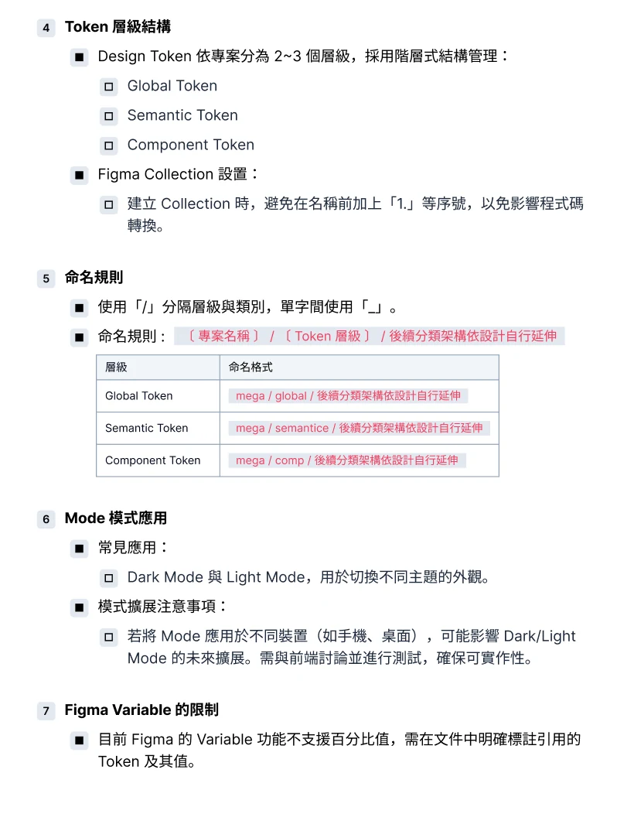
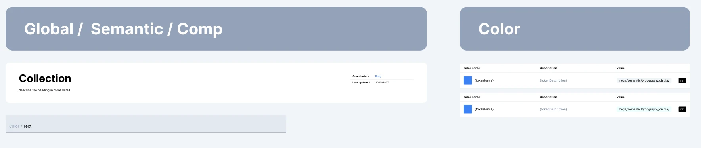
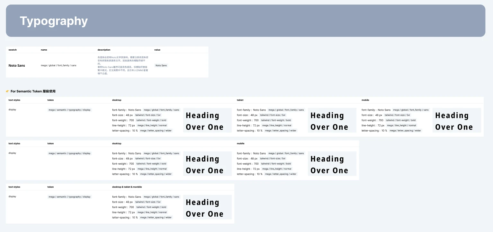

原本的設計規範以色碼與簡短文字記錄，定義模糊：
設計師之間各自解讀，設計與工程之間缺乏共同命名，溝通容易產生落差。

訂定規範
- 規則
- 撰寫 Design Token 建立規範，並與工程對齊：
- 引用 Tailwind 作為基礎 Token
- 專案獨立 Token 分為 Global／Semantic／Component 三層
- 統一命名規則，並整理 Mode 擴充與 Figma 限制等注意事項
- 配套
- 規範文件


建置工具
- 規則
- 建立 Design Token 文件的表格元件（Collection、Color、Typography 等）。
統一記錄格式，並標示製作者與最後更新日期。 - 配套
- Design Token 表格元件、匯入 Tailwind Token 的 Figma Library

